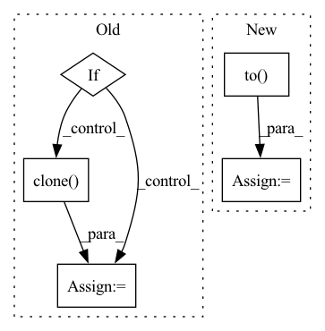

Pattern ID :12208
Before Change
segment_ids = segment_ids.to(args.device)
with torch.no_grad():
if args.mlm:
outputs = model(inputs, masked_lm_labels=labels, position_ids=position_ids, token_type_ids=segment_ids)
else:
if args.model_type == "bart":
decoder_input_ids = labels[:, :-1].contiguous()
decoder_input_ids[decoder_input_ids == args.mlm_ignore_index] = tokenizer.pad_token_id
lm_labels = labels[:, 1:].clone()
outputs = model(inputs, labels=labels, lm_labels=lm_labels, decoder_input_ids=decoder_input_ids, position_ids=position_ids, token_type_ids=segment_ids)
else:
outputs = model(inputs, labels=labels, position_ids=position_ids, token_type_ids=segment_ids)
lm_loss = outputs[0]After Change
inputs, labels = mask_tokens(inputs, labels, tokenizer, args.mlm_probability, args.mlm_ignore_index)
inputs = inputs.to(args.device)
labels = labels.to(args.device)
attention_mask = attention_mask.to( args.device)
position_ids = position_ids.to(args.device)
segment_ids = segment_ids.to(args.device)
with torch.no_grad():In pattern: SUPERPATTERN
Frequency: 3
Non-data size: 5
Instances Fragment ID: 41342247
Project Name: stanford-oval/genienlp
Commit Name: b84a6548a69fd9f62652eed1c74fd4b1fdb8b65b
Time: 2020-11-15
Author: mehrad@stanford.edu
File Name: genienlp/paraphrase/run_lm_finetuning.py
M Class Name: AnonimousClass
N Class Name: AnonimousClass
M Method Name: evaluate(5)
N Method Name: evaluate(5)
M Parent Class:
N Parent Class:
M File Name: genienlp/paraphrase/run_lm_finetuning.py
N File Name: genienlp/paraphrase/run_lm_finetuning.py
M Start Line: 318
M End Line: 344
N Start Line: 330
N End Line: 369
Before Change
// group.setdefault("params_old", group["params"])
for p in group["params"]:
if p.grad is None:
continue
p_t = p
param_state = self.state[p]
if "param_old" not in param_state:
param_state["param_old"] = torch.clone( p) .detach()
else:
p_t = param_state["param_old"]
After Change
def step(self, global_params, device):
for group in self.param_groups:
for p, g in zip(group["params"], global_params):
g = g.to( device)
d_p = p.grad.data + group["mu"] * (p.data - g.data)
p.data.add_(d_p, alpha=-group["lr"])
Fragment ID: 41342252
Project Name: tsingz0/pfl-non-iid
Commit Name: 330ce2d6169fd4a54cec28895418bd38c206b6a4
Time: 2021-03-24
Author: 2719584131@qq.com
File Name: system/flcore/optimizers/fedoptimizer.py
M Class Name: PerturbedGradientDescent
N Class Name: PerturbedGradientDescent
M Method Name: step(3)
N Method Name: step(1)
M Parent Class: Optimizer
N Parent Class: Optimizer
M File Name: system/flcore/optimizers/fedoptimizer.py
N File Name: system/flcore/optimizers/fedoptimizer.py
M Start Line: 89
M End Line: 108
N Start Line: 116
N End Line: 121
Before Change
compressed_st["state_dict"][f"{name}"]["u"] = (u[:, :i]@torch.diag(s)[:i, :i]).clone()
compressed_st["state_dict"][f"{name}"]["v"] = vt[:i].clone()
if embed is not None:
compressed_st["state_dict"]["embed"] = embed.clone()
name = delta_ckpt.replace("delta", "compressed_delta")
torch.save(compressed_st, f"{name}")
After Change
from diffusers import StableDiffusionPipeline
compressed_key = "unet"
compressed_st = {compressed_key: {}}
pretrained_st = StableDiffusionPipeline.from_pretrained(ckpt, torch_dtype=torch.float16).to( "cuda")
pretrained_st = pretrained_st.unet.state_dict()
if "modifier_token" in st:
compressed_st["modifier_token"] = st["modifier_token"]
st = st["unet"] Fragment ID: 41342251
Project Name: adobe-research/custom-diffusion
Commit Name: 5cd1e9c869b793d88573533a6a2adccd10aadcd0
Time: 2023-01-05
Author: nupurkumari@Nupurs-MacBook-Pro.local
File Name: src/compress.py
M Class Name: AnonimousClass
N Class Name: AnonimousClass
M Method Name: compress(5)
N Method Name: compress(4)
M Parent Class:
N Parent Class:
M File Name: src/compress.py
N File Name: src/compress.py
M Start Line: 10
M End Line: 48
N Start Line: 8
N End Line: 48